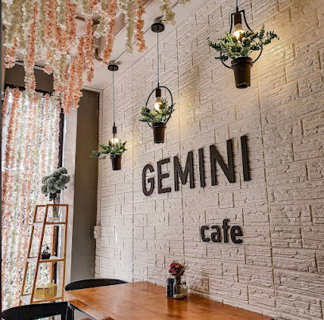
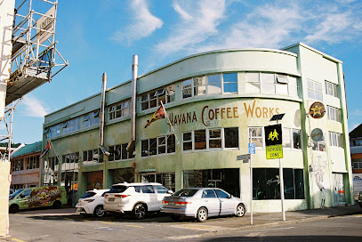
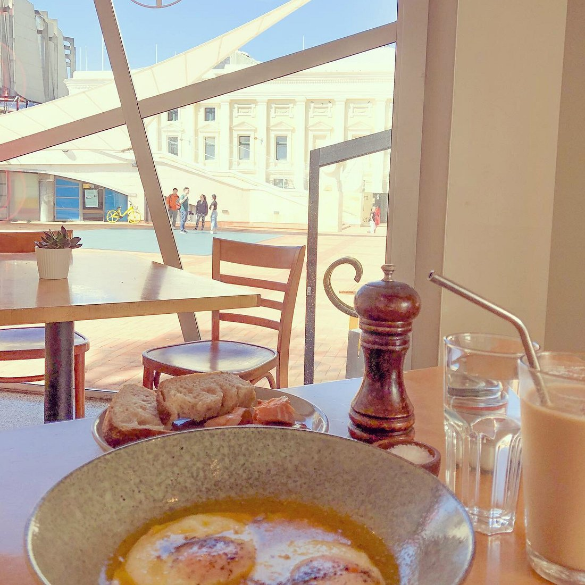
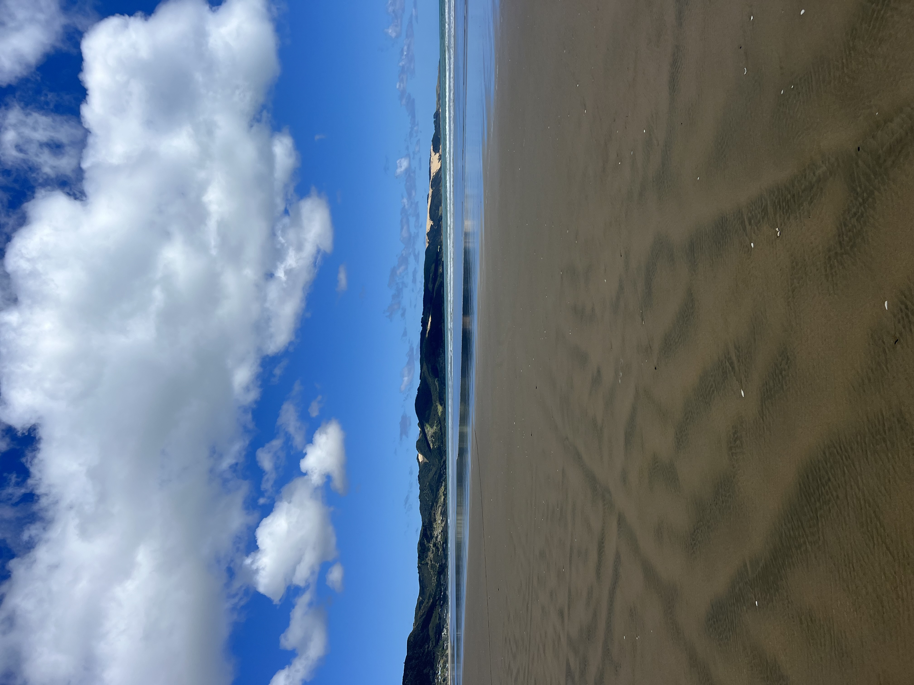
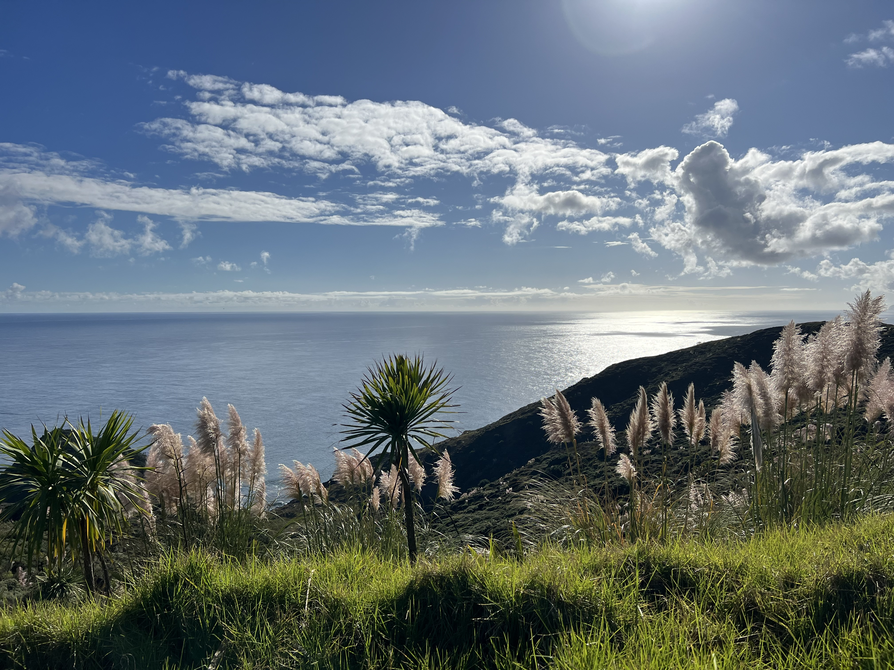
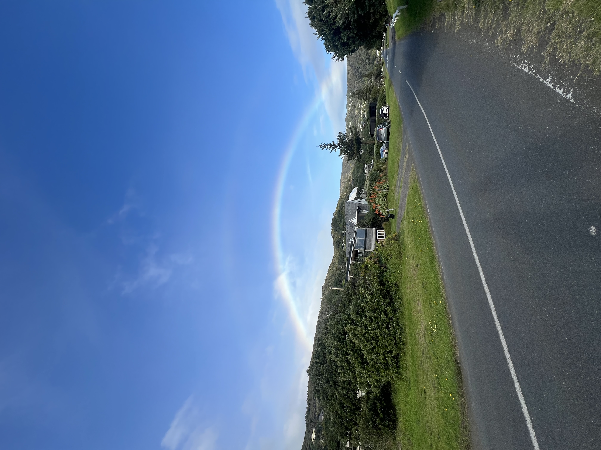
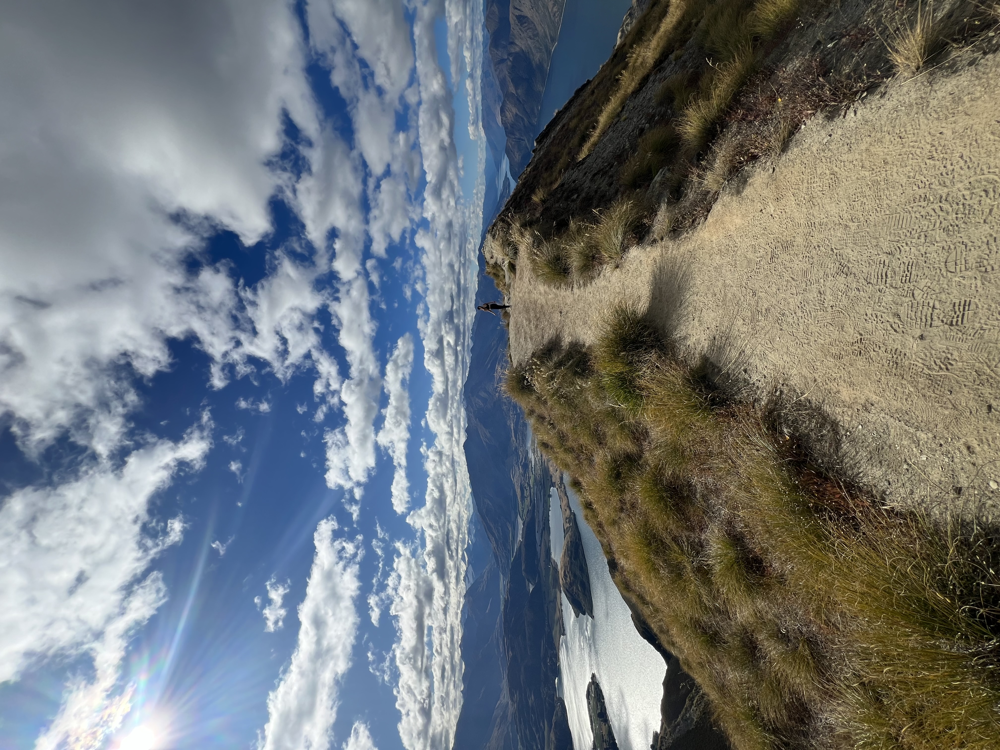

All About New Zealand
Wellington: The Capital of NZ
Wellington, the capital of New Zealand, sits near the North Island’s southernmost point on the Cook Strait. A compact city, it encompasses a waterfront promenade, sandy beaches, a working harbour and colourful timber houses on surrounding hills. From Lambton Quay, the iconic red Wellington Cable Car heads to the Wellington Botanic Gardens. Strong winds through the Cook Strait give it the nickname "Windy Wellington."
Cafes
My Favorite Cafes in Wellington

Gemini Cafe
Established in 2019, our journey began with a single, heartfelt mission: to bring the magic of Asian-inspired cuisine to the vibrant community of Wellington. As food enthusiasts and culinary explorers, we were determined to craft an extraordinary dining experience that would resonate with your senses and leave a lasting impression.
Address
20 brandon street, central wellington 6011
What I like about
Can’t fault this cafe apart from trying to get a table it’s so popular! The staff are very friendly, the coffee is excellent and the menu is just extensive enough and can’t be faulted.
Learn More
Havana Coffee Works
Havana Coffee Works, born on Cuba Street, Wellington by Geoff Marsland & Tim Rose in 1989. Havana revolutionised NZ’s coffee culture. Unapologetically bold coffee, roasted in batches by passionate coffee artisans.
Address
163 Tory St, Te Aro
What I like about
A little out of the way but worth the pilgrimage to worship at the altar that has brought so much goodness to Welly - Havana coffee works, Havana Bar, Fidels.
Learn More
Nikau Gallery Cafe
Nikau Café is a favourite with locals and visitors, for coffee through to leisurely brunch or lunch. Nikau is situated on the ground floor adjacent to City Gallery Wellington.
Address
101 Wakefield Street
What I like about
Awesome place to grab a bite to eat! The food is AMAZING & super flavorful. The staff are diligent & friendly.
Learn MoreGallery
My Photos from New Zealand




